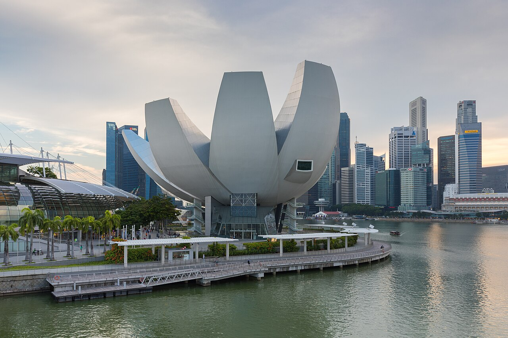

Singapore in a Port Day: Marina Bay, the Gardens, and Hawker Food

Singapore is one of the easiest cruise ports in Asia — and one of the most rewarding for a single day. The terminal sits on the edge of Marina Bay, the trains run on time, English is everywhere, and the whole downtown is compact enough to cover on foot and by MRT. The catch is the weather: it is hot, humid, and a downpour can arrive with ten minutes' notice. Plan the outdoor walking for the morning, keep the air-conditioned sights for the afternoon, and you will get the city without melting.
Arriving: Marina Bay Cruise Centre
Most large cruise ships dock at the Marina Bay Cruise Centre Singapore (MBCCS), 61 Marina Coastal Drive, right on the bay. Immigration is handled in the terminal and is usually fast. From the terminal, the Marina South Pier MRT station is about a 10-minute walk — flat, signposted, and the cheapest way into town. Bus 400 also runs from near the terminal into the downtown area for about S$1.10. A taxi or Grab from the terminal to the Marina Bay / City Hall area runs roughly S$6–18 depending on traffic and surcharges, and is worth it if you are a group of three or four splitting the fare.
Check the ship's all-aboard time before you leave the terminal, and remember Singapore is one hour ahead of some Southeast Asian ports — the ship runs on its own clock, and the two do not always agree.
The morning: Gardens by the Bay and the bayfront
Start at Gardens by the Bay, a short walk or one MRT stop from the terminal area. The Supertree Grove and the outdoor gardens are free, and they are best in the morning before the heat peaks. The two cooled conservatories — the Flower Dome and the Cloud Forest — are the paid part, roughly S$32–46 combined depending on the ticket type and whether you buy online; sources vary, so treat that as a range, not a fixed price. The Cloud Forest, with its indoor waterfall and misty mountain walk, is the one to pick if you only do one.
From the gardens, walk the bayfront promenade toward the Merlion and Marina Bay Sands. The loop is flat, mostly shaded by the towers, and takes about 30–40 minutes at a strolling pace. The Helix Bridge is worth the detour for the view back across the bay, and the Merlion — Singapore's half-lion, half-fish mascot — is a five-minute photo stop, not a destination. If your ship stays late, the Supertree light show (Garden Rhapsody, around 7:45 PM and 8:45 PM) is free and genuinely good — but only if your departure allows it; never cut the all-aboard time close for a light show.
Lunch: eat like a local
Singapore's hawker centres are the best lunch deal of any cruise port in Asia. Lau Pa Sat (a 10-minute walk from Marina Bay, in the financial district) and Maxwell Food Centre in Chinatown both serve a full meal — chicken rice, laksa, char kway teow, satay — for roughly S$5–12. Satay Street, the row of stalls that opens along Boon Tat Street beside Lau Pa Sat in the evening, is the classic first-timer stop. Most stalls take cards or QR payment now, but carry some cash — the smallest stalls still prefer it, and it is faster in a queue. Tap water is safe to drink, and every mall has free water fountains and air conditioning if you need a reset.
The afternoon: pick one neighbourhood
After lunch, pick one area rather than trying to see everything. Chinatown is the closest and the most rewarding on a short day: the Buddha Tooth Relic Temple, the street market on Pagoda Street, and the old shophouses are all within a few blocks of the Chinatown MRT station. Little India, two stops further, is louder and more colourful — the Tekka Centre market and the Mustafa Centre are the draws. Or take the MRT to the Singapore Botanic Gardens (a UNESCO site, free entry) for a slower, greener afternoon. Orchard Road is there if shopping is the point, but it is a mall street like any other, and the port day is short.
Getting around
The MRT is the way to move. Fares run roughly S$1–2 per ride, and you can tap in and out with a contactless bank card or phone — no ticket machine needed. An EZ-Link or NETS FlashPay card works the same way if you prefer a local card. Buses are cheap (bus 400 from the terminal is about S$1.10) and air-conditioned, but slower than the train in traffic. Taxis and Grab fill the gaps: short hops downtown run roughly S$6–18. Everything is signposted in English, and the stations announce stops in English too.
What a port day costs (approximate, per person)
- MRT and bus for the day: roughly S$5–10
- Gardens by the Bay domes (both): roughly S$32–46
- Hawker lunch: roughly S$5–12
- Supertree Grove, bayfront walk, Merlion, Botanic Gardens: free
- Comfortable total without shopping: roughly S$45–70
Tips for cruisers
- Heat first, sights second. Do the outdoor walking before noon. The domes, malls, and museums are air-conditioned — save them for the afternoon.
- Carry a small umbrella. Afternoon showers are short and heavy; a cheap umbrella beats a soaked shirt, and every 7-Eleven sells one.
- Don't queue for the Sands SkyPark if time is short. The view is good, but the gardens and the bayfront give you most of it for free.
- Watch the departure, not the sunset. The bay looks best at dusk, but the ship leaves on its own clock — be back at the terminal with an hour to spare.
Prices and hours are approximate and were checked in November 2026; fares and ticket prices change, and the domes' combined price varies by ticket type. Confirm on the day if a price decides the plan.